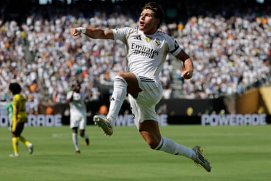
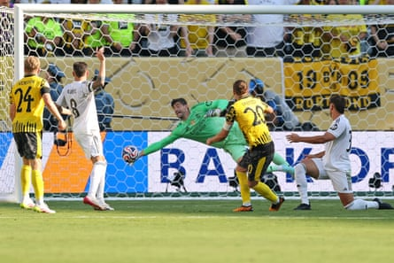

Real Madrid have set up a date with Paris Saint-Germain in the Club World Cup semi-final, despite a chaotic last 10 minutes, giving Kylian Mbappé a chance to face his former side on a big stage after he scored a fantastic acrobatic goal in a 3-2 win over Borussia Dortmund .
Xabi Alonso’s Madrid looked entirely in control for the vast majority of the match, until a remarkable stoppage time made things nervy and Thibaut Courtois’s last-gasp save preserved the victory. That incredible conclusion to an otherwise pedestrian match also included a late red card given to Real Madrid’s Dean Huijsen, the impressive new arrival in central defence, who will miss the semi-final as a result of bringing down Serhou Guirassy right after Mbappé’s stupendous volley for Real Madrid’s third.
Real Madrid dominated most of the game, with Gonzalo García opening the scoring for his impressive fourth goal of the tournament and the left-back Fran García (no relation) adding the second – his first goal in 52 appearances this season.
But while the final stages may be the most memorable period of this game for any of the 76,611 who filled MetLife stadium to 93% of its listed capacity, it was the Garcías’ contributions and Real Madrid’s general play through the preceding 90 minutes that most represented what the Spanish giants might look like in the coming season under Alonso.
Fran García celebrates after scoring Real Madrid’s second goal against Borussia Dortmund.Photograph: Adam Hunger/AP
When the former Bayer Leverkusen manager took over the club he used to play for after Carlo Ancelotti’s disappointing final season, the Club World Cup kicked off in just over two weeks. The start of a major standalone tournament coming so soon after a new manager appointment is far from the norm, but Alonso’s intentions were clear.
“I see it as an opportunity for two reasons,” he said. “One, because it means that we can accelerate processes, get to know each other sooner, see things that we want to be. Then it’s a chance to fight for another trophy … If we can bring together those two things then it can be a very good start.”
It has indeed been a very good start. On Saturday, as they had throughout the tournament so far, Alonso’s Real Madrid seamlessly integrated young players that seemed primed to make a leap into the elite, with their contributions helping Real to be one win away from a chance at that trophy in the Club World Cup final.
The goals came from two players who represent the strong role youth development still can play in a Madrid team laden with stars. Both are academy products, and both caused danger throughout the match aside from their goals.
Thibaut Courtois denies Borussia Dortmund's Marcel Sabitzer an equaliser from the last shot of the game.Photograph: Charly Triballeau/AFP/Getty Images
The assists, meanwhile, seem to indicate that the Spanish giant’s succession planning for life after Luka Modric is working. Arda Guler, the 20-year old Turkey international, was brilliant once again, providing the assist for Gonzalo García’s opener and generally being a nuisance to a timid Dortmund backline throughout the 90 minutes. Along the backline, Huijsen effectively controlled proceedings just behind the brilliant Aurélien Tchouaméni in defensive midfield. The pair, along with Huijsen’s partner in central defence, Antonio Rüdiger, kept Dortmund from threatening much if at all – at least until Huijsen’s red card and the madness that surrounded it.
These quietly efficient performances bring to mind the best of what Alonso was able to achieve in his time in charge of Bayer Leverkusen. But this is still Real Madrid, and there are still big stars capable of improvising extraordinary things. Vinícius Júnior, as usual, proved to be good for a few of those moments, at one point attempting an audacious chip from 30-plus yards that nonetheless went high and wide.
Then, of course, there was Mbappé. The French superstar is still finding his feet after being in hospital with gastroenteritis, an illness that reportedly cost him 5kg of body weight and presumably days of training and getting in sync with his new manager and teammates. With the added lightness, though, Mbappé provided the game’s signature moment in that memorable stoppage time, hanging in the air to meet a cross with a sideways scissor kick from close range that flew past Dortmund’s goalkeeper, Gregor Kobel, and into the back of the net, delighting the near-capacity crowd.
Now, Mbappé will hope to be fully fit and one can imagine he will be breaking down Alonso’s door begging to start a headline semi-final at this same venue on Wednesday, his first chance to face the team with whom he became a World Cup winner and a global superstar.
Upon his introduction to his new charges, Alonso set out “to see the things we want to be” and “to win a trophy” as his goals. “If we can bring together those two things then it can be a very good start,” he said.
That good start is now just one win from yet another major final for Los Merengues .